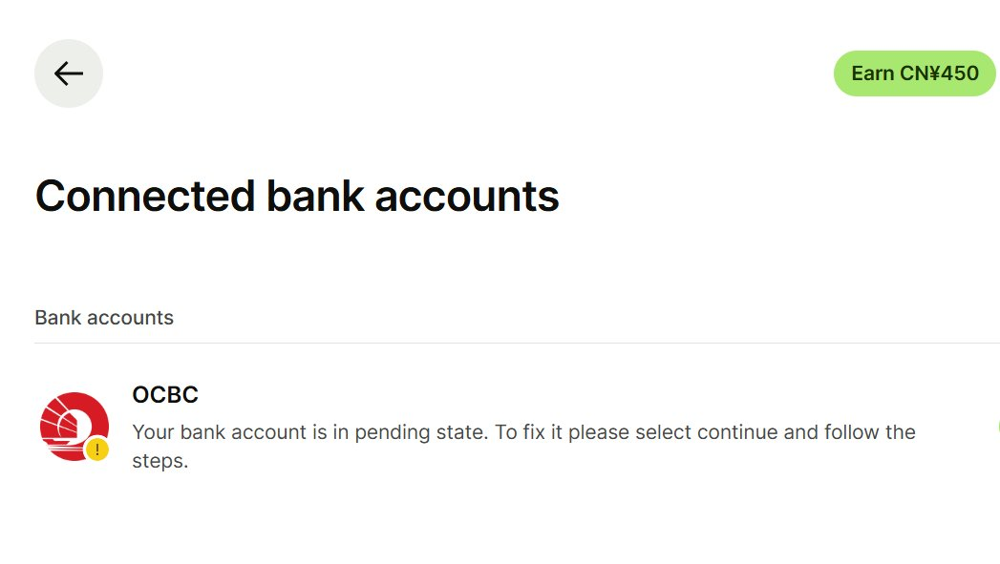

Aoi M
@aoim33
速报
Wise 在最近的一次更新中新增了对新加坡账户的直接链接支持
这意味着 Wise 可以在获得本人同名的新加坡银行账户授权的前提下互相转账，并且可以直接从新加坡银行账户提取资金至 Wise，或者反向操作
但是需要注意：这种提取资金的方式本质上和香港银行的 eDDA 类似，即在不提前通知客户的情况下自动授权扣款
因此如果账户余额不足，则会被银行收取相关费用
可前往 Wise 主页 - 个人头像 - Payment Methods - Connected Bank Account - Singapore 处直接授权连接，并且在后续页面中自定义限额和可选填的到期日期
